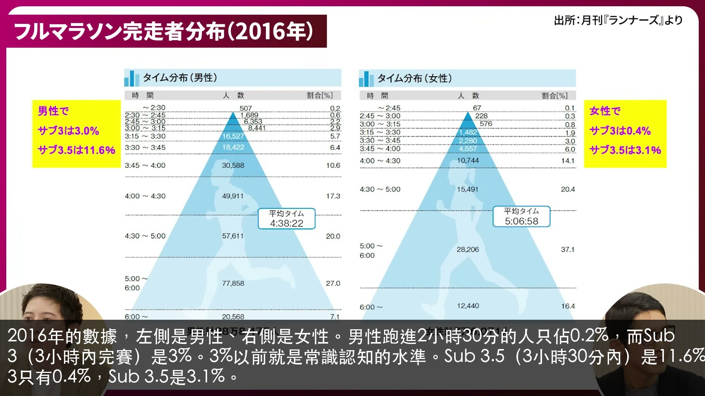
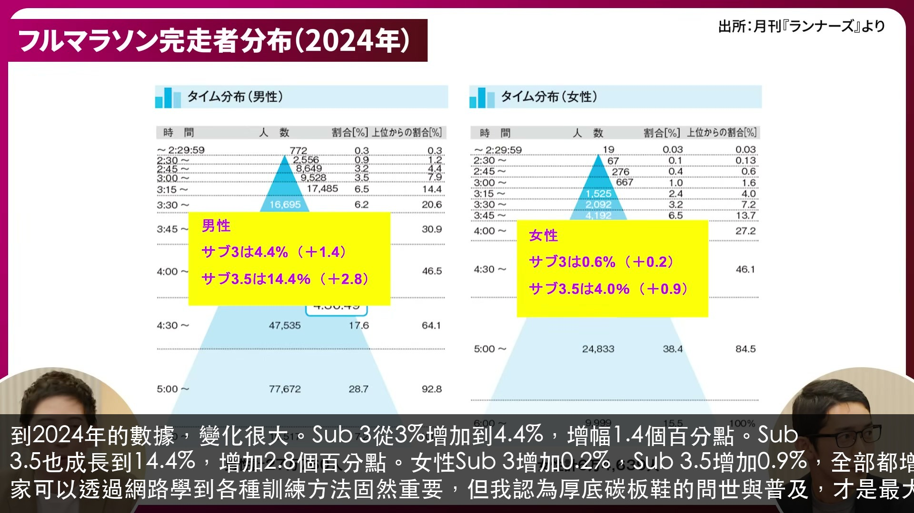
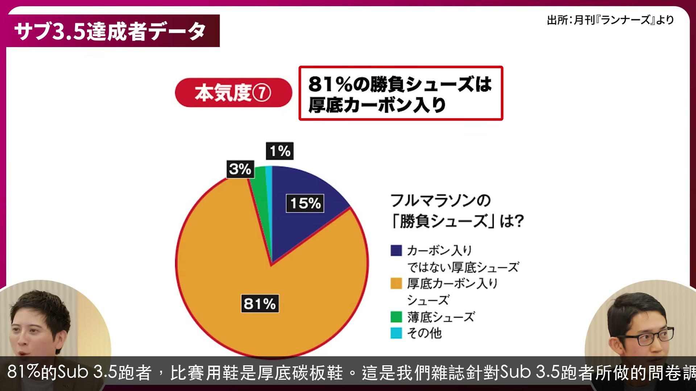
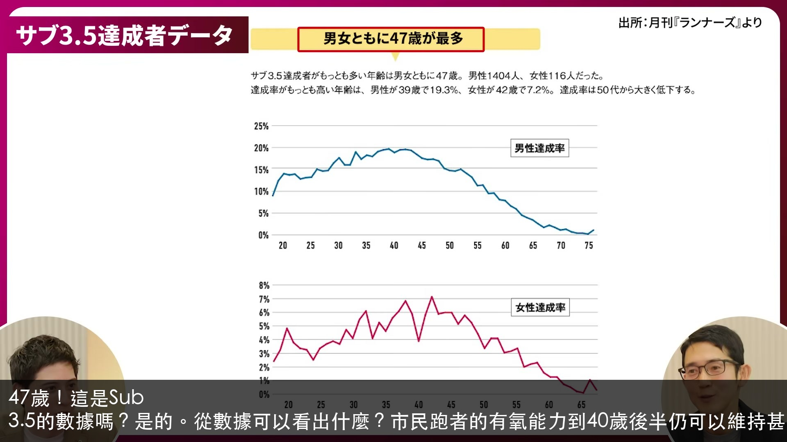
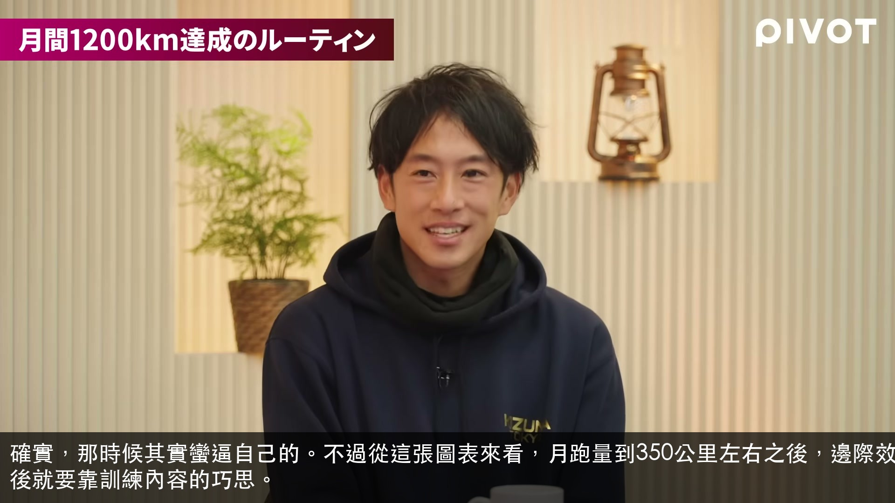
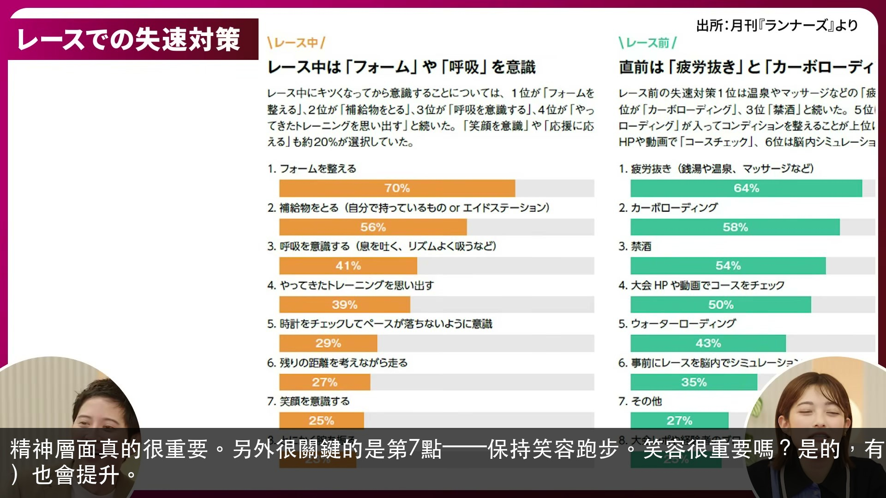
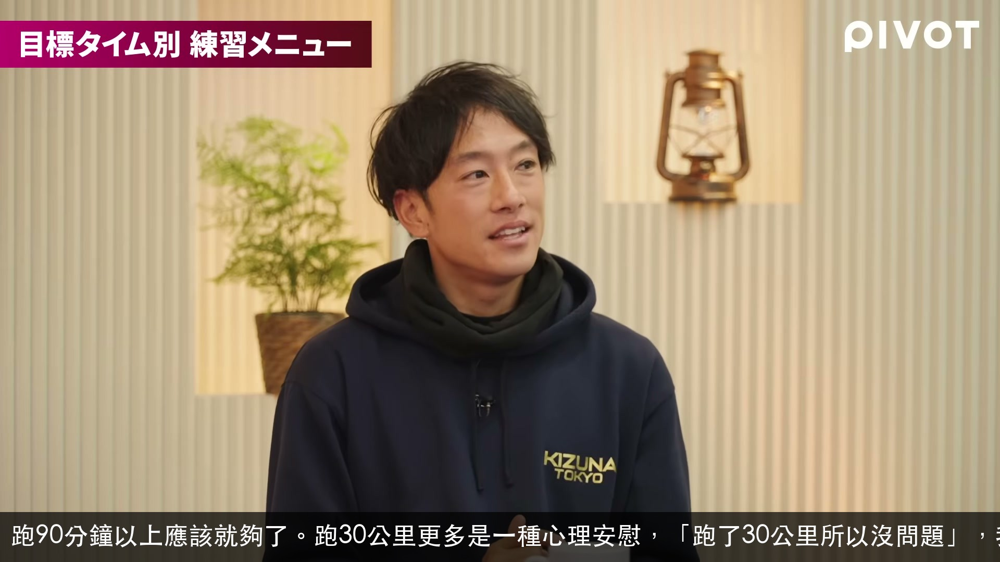
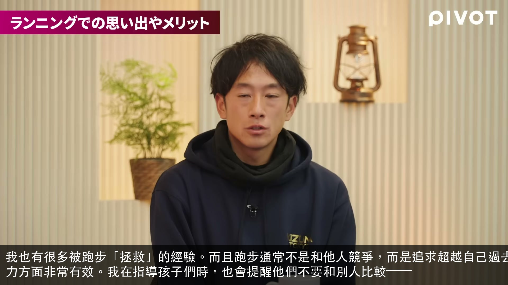

2016年的數據，左側是男性、右側是女性。男性跑進2小時30分的人只佔0.2%，而Sub 3（3小時內完賽）是3%。3%以前就是常識認知的水準。Sub 3.5（3小時30分內）是11.6%。至於女性，Sub 3只有0.4%，Sub 3.5是3.1%。
で、これ2016 年だと左側が男性、右側が女性です。 で、男性は、ま、 2時間半までの人の割合が 0.2%。 おお、すごいですね。で、サブスリーと呼ばれる 3時...

到2024年的數據，變化很大。Sub 3從3%增加到4.4%，增幅1.4個百分點。Sub 3.5也成長到14.4%，增加2.8個百分點。女性Sub 3增加0.2%，Sub 3.5增加0.9%，全部都增加了。現在大家可以透過網路學到各種訓練方法固然重要，但我認為厚底碳板鞋的問世與普及，才是最大的原因。
2024年のデータだとはい。 高変化してると。え、サブ 3が4.4%に 増えたと。1.4%増えていると。 へえ。で、サブ3.5も14.4%でプラ 2.8。女性の...

81%的Sub 3.5跑者，比賽用鞋是厚底碳板鞋。這是我們雜誌針對Sub 3.5跑者所做的問卷調查結果。
81% が勝負シューズは圧底カーボイシューズ。 あ、これはですね、あのうちの雑誌でやったマルさん 3 時間半を切る方々にアンケートしたっていう企画なんですね。

47歲！這是Sub 3.5的數據嗎？是的。從數據可以看出什麼？市民跑者的有氧能力到40歲後半仍可以維持甚至提升，之後才緩慢下降。
47歳。これサブ3.5の話ですか? そうですね。サブ3.5の話ですね。 これはどんなデータが見えたんですか? 40 代後半まではこう市民ナの方であれば自給力が維...
對對，成績差距很近。雖然只見過他一次，但就是有種想超越他的心情。這種「在身邊就有個具體目標追趕」，正是跑步的美好之處。
そうそう。めっちゃ近いんですよ。 だ。そういうの見てほぼあったことも 1 回ぐらいしかあったことないんですけどでもあの人に絶対追いつきたいみたいなやっぱ気持ちも...

確實，那時候其實蠻逼自己的。不過從這張圖表來看，月跑量到350公里左右之後，邊際效益遞減，成績的提升就沒那麼明顯了。超過之後就要靠訓練內容的巧思。
そうか。 結構追い詰められてた感はありますね、その頃は。 ま、でもこのグラフ見ても 350km ぐらいでもちょっと収穫低限が起こってるというか、そんなに記録が伸...

精神層面真的很重要。另外很關鍵的是第7點——保持笑容跑步。笑容很重要嗎？是的，有數據顯示帶著笑容跑步，跑步經濟性（能量效率）也會提升。
はい。はい。はい。はい。はい。 大事ですよね。メンタル。 あ、あと大事なのはこの7番の笑顔を 意識するですね。え、大事なんですか? はい。あの、笑顔で走った方が...
那是舊方法。那就是我以前做的方式。現在的方式不同了嗎？現在已知，只需從賽前3天左右開始增加碳水攝取，就能達到和傳統方式相同的肝醣儲存量。
のが昔の方法です。 あ、もうまさにそれでした。違うんですか?今。 あ、今はもうレースの3 日前ぐらいから物を増やせば、ま、古典的な法と同じぐらい貯蔵できるってこ...
鹽分。我平時泡澡時會加入瀉鹽（硫酸鎂），聽跑友說對防止腳抽筋很有效。也因為這樣，我幾乎每天晚上都喝味噌湯，比賽當天早上也會喝一杯清湯味噌湯。
塩分か。 塩分です。 あの、普段からお風呂にあの、エピソムソルトっていう塩を入れてお風呂に入ってなんか足釣りに効果があるっていうのをランナー仲間に聞いて結構その...

跑90分鐘以上應該就夠了。跑30公里更多是一種心理安慰，「跑了30公里所以沒問題」，我覺得這個心理因素才是主要的。
90分以上で十分かなと思ってて、 で、30kgってなん 安心を買うというか、 30km やったから大丈夫だ。だ、そっちがメインな気がするので。
還有恢復時間等。是的，真的因人而異。最後，我想提一個建議：和夥伴一起跑真的非常重要。跑步途中就算彼此不是很熟，共享這段時間後就會很快變得親近，對建立跑步社群很有幫助。和夥伴一起跑的感覺如何？我一直都是一個人跑。平時很難獨自完成的訓練，比如間歇跑或10公里配速跑，一個人時做不到，但約了人一起就能完成。一旦有了約定就沒辦法臨時放棄。
うん。リカバリーとか。 ええ。あ、そうですよね。やっぱ人それぞれですね。 最後、あの、僕がちょっと1つ皆さんに 提言したの、やっぱ仲間と走るってすごい 大事かな...

我也有很多被跑步「拯救」的經驗。而且跑步通常不是和他人競爭，而是追求超越自己過去的成績，是一種與自己對話的運動。這在提升動力方面非常有效。我在指導孩子們時，也會提醒他們不要和別人比較——
皆さんはいかがですか? そうですね、私も、えっと、ランニングで買われたっていう部分がすごくあるので、で、しかもランニングってその他者との勝負じゃないことが多いじ...